Bonus: How to Create Your Onion Site on Tor ?
In this lecture, I would like to briefly show for those who are curious how they can create their own onion websites on the Tor. I said for those who are curious, but since I will refer to what I will tell in this lecture in the future, I strongly recommend that everyone follow the lecture here.
In this lecture, I will only show you how to use your computer as a host. But of course, your website won't be accessible when your computer is turned off, as the host, that is, hosting site files, will be your computer. If you want to establish a constantly active website, you can rent a server and have it hosting 7/24 via this server. You can also use of hosting services that offer services over darknet. Since the installation process will be similar in any case, I will show you how you can host on your computer so that everyone can test it and see how the structure works. Since the professional website setup and details will be outside of the this course curriculum, I will only be discussing hosting a simple web page. In other words, you need to have the necessary infrastructure in order to set up a website that offers a comprehensive service. Here we will be covering the basics of onion service hosting to get an idea of how the system works.
I will be doing the explanations over "Windows" as they are more widely used. Nevertheless, the tools I will use during the lecture are those that can be used in common on "Linux" and "Mac" operating systems. In other words, you can easily follow the steps on the operating system you are using.
First of all, to use your computer as a server, you need to download and install the XAMPP tool that helps you create a local web server .
Let's visit the website to download tool. From here you should download the setup file suitable for your system. Since I am using Windows, I am downloading the setup file for windows.
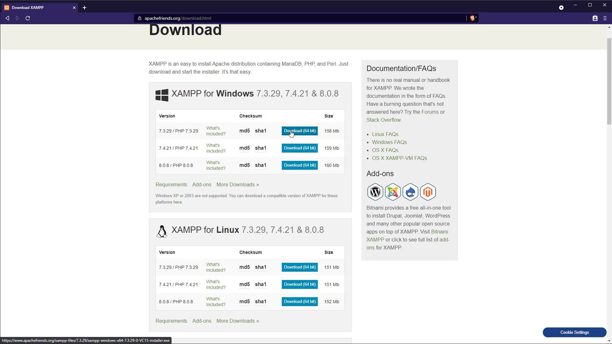
After downloading setup file, let's run setup and complete installation steps. I am not talking about the installation details as all the installation steps are very easy and standard all systems. You can easily complete installation steps.
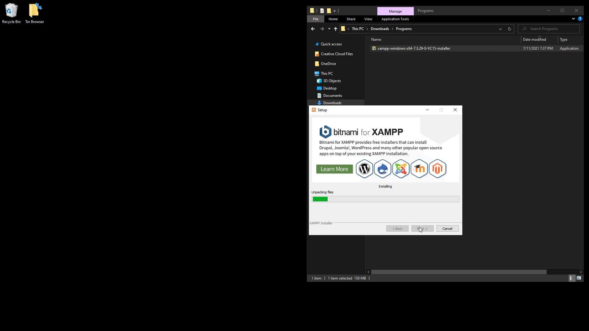
After completing the installation steps, let's run the application. When the application opens, click the "Start" button to start the "Apache" service.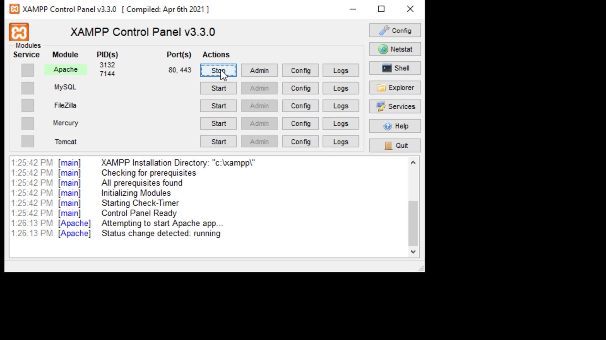
After the service is started, click the " Explorer " button to add the files of your website to the required location .
Now you should go into the " htdocs " folder and add the files of your website after deleting the files here.
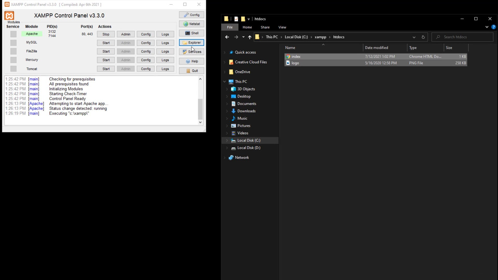
After adding the files, go back to the application and click the "Admin" button to test the website.
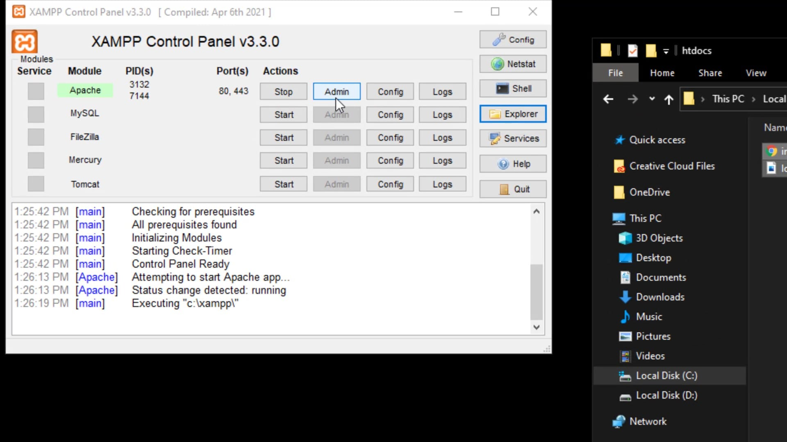
From the page that opens, you can see that you have managed to host your website locally.
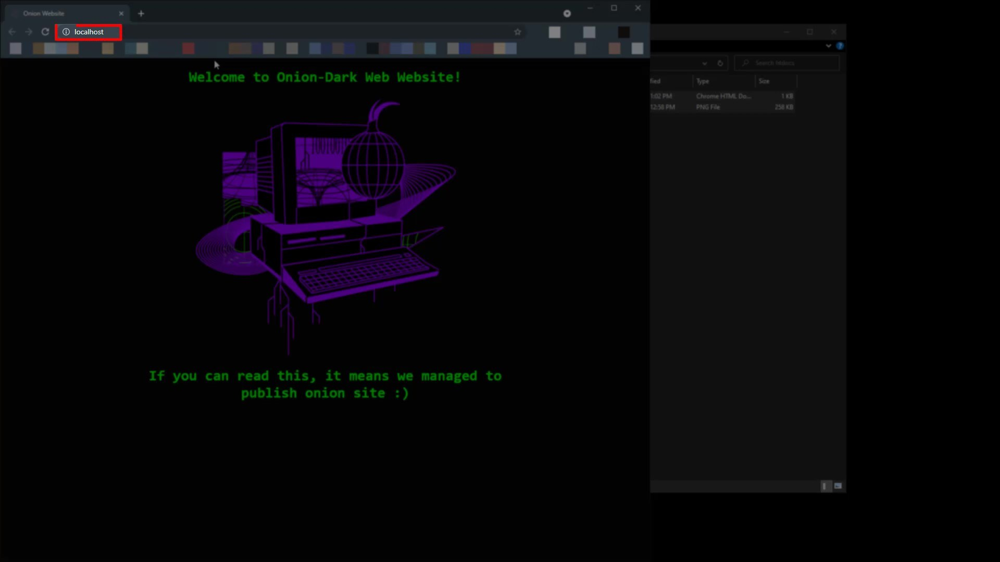
Now you need to make a few adjustments to get this site, which you have hosted locally, on the Tor network.
First, let's switch to Tor Browser >> Browser >> TorBrowser >> Data >> Tor folders.
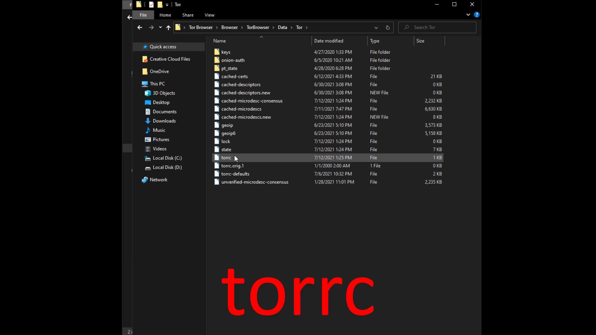
Let's right click on the file named "torrc" here and open it with any text editor.The file location is similar on Linux and Mac systems. You can easily access the " torrc " file by going to the location where you installed the Tor browser .
Let's come to the bottom line of the opened file and specify the hidden service directory of your website and the address of your local server.
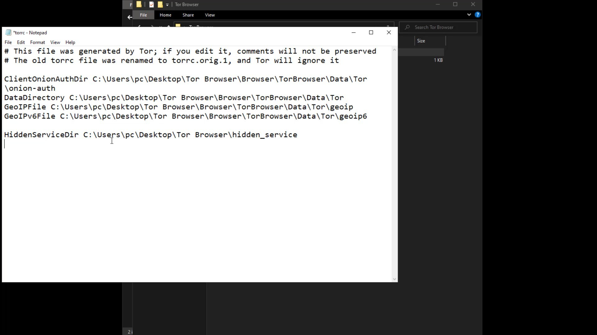
In the first line, you need to specify the location where the configuration files of the your onion service will be located. I specify that it should be saved in a folder called hidden_service in the tor browser folder.
As the service port, I specify port 80 in the local network as indicated by the XAMPP tool. Since I am currently hosting the website on the local network and port 80, I enter the address information in this way.
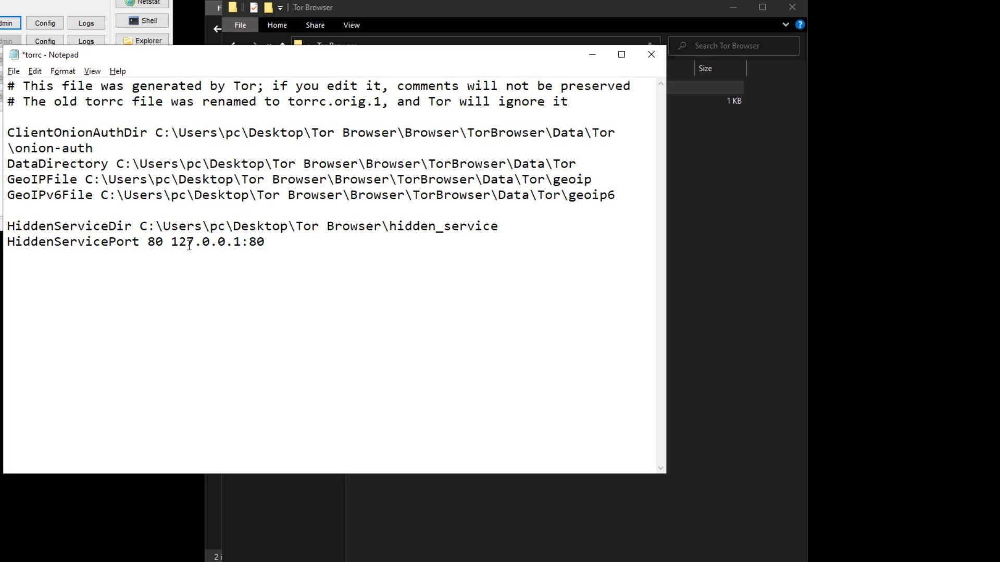
After entering the required information, save and close your file. Now all you have to do is run the Tor browser to generate the domain name. As soon as you run the browser, the " hidden_service " folder that you have specified will be created automatically and your file containing the information of the domain name will be produced.
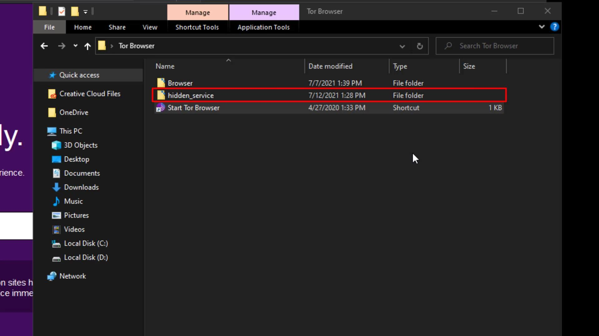
After running the Tor browser, let's visit the " hidden_service " file location to find out the domain name .Let's right click on the " hostname " file in the directory and open it with the help of any text editor.
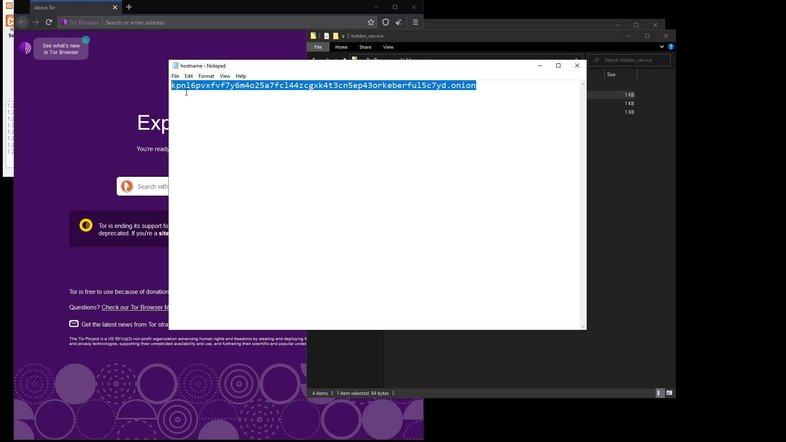
Here, the domain name created for me is the address in this file. Let's try to access this address through the Tor browser to try it right away. After a short while, i can see that the web page i have hosted has come across.
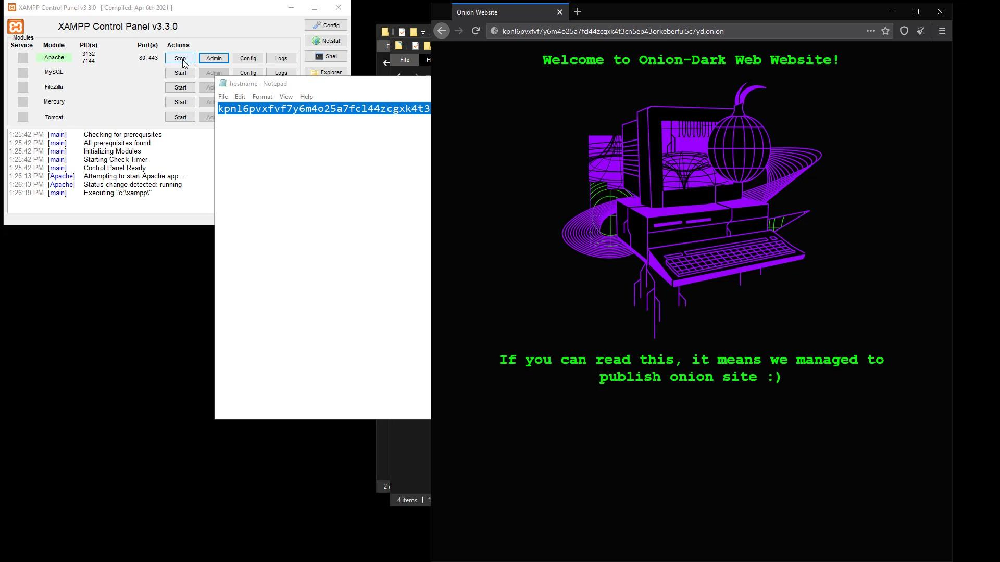
Thus, you have succeeded in create your onion site on Tor. So now you have a "Dark Web" site. But let me remind you again, since you host the website on your computer, the website cannot be accessible while your computer is turned off.
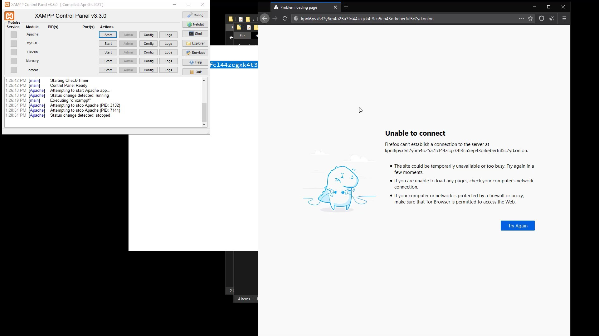